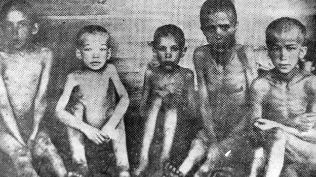
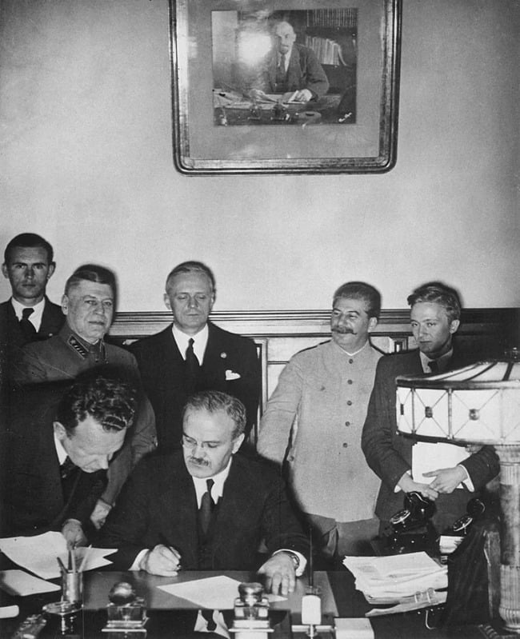

Rund um die Ukraine und Russland existieren viele Stereotypen, die das europäische Bild dieser Länder prägen.
Sie beeinflussen das Verständnis aktueller Ereignisse und verzerren oft die Realität.
Von der russischen Propaganda geschaffen, finden sie ihren Weg in deutsche Medien und öffentliche Debatten.
Doch entsprechen sie der Wahrheit? Wie viele dieser Vorstellungen sind Ihnen bekannt?
Lassen Sie uns die verbreitetsten hinterfragen.
Mythos Nr.1: Der Krieg zwischen Russland und der Ukraine dauert seit 2022 an
Kurzer geschichtlicher Überblick: Die heutige Hauptstadt der Ukraine – Kyjiw – entstand im 5. bis 6. Jh[1]. Im 9. Jh. gründete Fürst Oleh die Kyjiwer Rus, die sich zu einem großen, wohlhabenden christlichen Reich mit engen Beziehungen zu Byzanz und Europa sowie einer geschätzten Bevölkerung von 4,5 bis 8 Millionen entwickelte[2]. Erst sechs Jh. nach Kyjiw wurde die Stadt Moskau gegründet. Die Rus zerfiel im 13. Jh. und ging in andere politische Gebilde über, behielt jedoch ihren kulturellen Kurs bei: Bildung, christliche Tradition und internationale Verbindungen.
Im Jahr 1721 benannte Peter I. den Moskauer Staat in Russland um – eine Aneignung des historischen Erbes der Kyjiwer Rus (Ukraine)[3]. Im 17. Jh. trat das Hetmanat, der ukrainische Kosakenstaat, unter der Führung des gewählten Hetmans Bohdan Chmelnyzkyj erstmals in ernsthaften politischen Kontakt mit Moskau[4].
Seitdem verfolgt Moskau bzw. Russland gegenüber der Ukraine eine imperiale Politik: Russland strebte nicht nur nach territorialer Kontrolle, sondern auch danach, die ukrainische Identität zu unterdrücken und auszulöschen.
Der Krieg, der 2014 begann und 2022 in eine umfassende Phase überging, ist nur eine weitere Etappe der kolonialen Expansion, die seit vielen Jahrhunderten andauert. Dies ist kein lokaler Konflikt oder eine neue Krise, sondern ein gezielter Versuch, die ukrainische Staatlichkeit, Sprache, Kultur und Identität zu zerstören. Um den aktuellen Krieg zu verstehen, ist es wichtig, einen Blick auf die wichtigsten Ereignisse der Vergangenheit zu werfen:
Zerstörung der Hetmanate (1764): Die russische Kaiserin Katharina II. liquidierte das Hetmanat[5] – die damalige ukrainische Autonomie – zur vollständigen Integration in das Russische Imperium. Die Ukraine wurde zu einer russischen Provinz und verlor für 150 Jahre ihre Staatlichkeit. Ukrainische Bücher, Lieder, Symbole und andere kulturelle Ausdrucksformen wurden verboten. Den Ukrainer*innen wurde die Möglichkeit genommen, hohe Staatsämter zu bekleiden.
Systematischer Linguizid: Russland hat über viele Jahrhunderte die Sprache als Waffe gegen jene Nationen eingesetzt, die es zu unterwerfen versuchte. utzende von Völkern innerhalb der von Russen dominierten Staatsgebilde wurden gewaltsam auf die russische Sprache umgestellt. Es gab etwa 130 Versuche, die ukrainische Sprache zu unterdrücken oder ganz zu vernichten[6].
Das Valuev-Rundschreiben[7] (1863) — ein Dekret, das den Druck von Büchern in ukrainischer Sprache verbot, ausgenommen Belletristik.
Infolgedessen erlebte die ukrainische Literatur einen schweren Schlag, und die Bildungs- sowie wissenschaftliche Tätigkeit kamen zum Stillstand.
Der Emser Erlass[8] (1876) — vollständiges Verbot des Drucks und der Einfuhr ukrainischer Bücher aus dem Ausland sowie von Theateraufführungen und öffentlichen Auftritten in dieser Sprache.
Dies lähmte das literarische Leben, viele Schriftsteller wechselten zur russischen Sprache.
Abschaffung des ukrainischen Bildungssystems (18.–19. Jh.). Schließung ukrainischer Schulen, Vereinheitlichung des Bildungssystems unter der russischen Sprache.
Mehrere Generationen wuchsen ohne Zugang zur Bildung in ihrer Muttersprache auf.
Russifizierung und Assimilation in der Sowjetzeit.
Die UdSSR unterdrückte die ukrainische Sprache in jeder Hinsicht und förderte die Russifizierung[9].
Kulturschaffende und Wissenschaftler*innen wurden Opfer von Repressionen, und Versuche der nationalen Wiederbelebung wurden blockiert.
Das Sprechen der ukrainischen Sprache wurde als „bauernmäßig“ dargestellt.
Infolgedessen sprechen viele Ukrainer bis heute Russisch.
Russifizierung in den besetzten Gebieten heute.
Wenn Ausländer und manche assimilierten Ukrainer die Bedeutung der Sprache nicht verstehen,
so war sich Russland ihrer Schlüsselrolle bei der Bildung nationaler Identität stets bewusst.
In den besetzten Gebieten ist Unterricht in der Muttersprache verboten[10],
ukrainische Bücher werden entfernt und vernichtet[11], Millionen russischer eingeführt[12].
Der „Schutz der russischen Sprache in der Ukraine“ bleibt eine konstante Forderung – sowohl der russischen Regierung im Rahmen „friedlicher Vereinbarungen“ als auch ihrer sogenannten „Opposition“[13].
Holodomor[14] (1932-1933). Das stalinistische Regime organisierte eine groß angelegte künstliche Hungersnot auf dem Territorium der Ukraine. Einsatzkräfte beschlagnahmten gewaltsam Ernte und Vieh, durchsuchten Häuser der Dorfbewohnenden und nahmen ihnen die letzten Vorräte weg. Straßen in die Städte wurden blockiert, und diejenigen, die versuchten, dorthin zu gelangen, wurden erschossen. In dieser Zeit hatte die Regierung bedeutende Getreidevorräte und exportierte diese ins Ausland. Der Hunger wurde auch 1921–23 und 1946–47 als Waffe gegen die ukrainische Bevölkerung eingesetzt. Insgesamt starben in diesen Jahren 5-7 Millionen Menschen, die Hälfte von ihnen waren Kinder.

Holodomor – eines der schrecklichsten Verbrechen des 20. Kahrhunderts
Repressionen gegen die ukrainische Intelligenz[15] (1920-1930) oder die „hingerichtete Renaissance". Die UdSSR zerstörte gezielt alle Versuche der nationalen Wiedergeburt. Etwa 35.000 der bedeutendsten Vertreter der ukrainischen Intelligenz - Schriftsteller*innen, Künstler*innen, Wissenschaftler*innen wurden in sowjetischen Lagern unterdrückt und gefoltert. Dies führte zu einem kulturellen und wissenschaftlichen Niedergang, dessen Folgen bis heute spürbar sind.
Besetzung der Krim[16] (2014) und der Krieg im Donbass[17]. Die gegenwärtige Aggression Russlands ist eine Fortsetzung seiner bisherigen Politik und zeigt die Unveränderlichkeit der imperialen Ambitionen und der kolonialen Tradition Moskaus.
Mythos Nr.2: Russland ist der Hauptbesieger des Nationalsozialismus im Zweiten Weltkrieg

W. Molotow unterzeichnet in Anwesenheit von J. Stalin und J. v. Ribbentrop den Hitler-Stalin-Pakt im August 1939.
Moskau nutzt aktiv den Mythos von der „entscheidenden Rolle der Russen“ im Krieg und minimiert den Beitrag anderer Völker. Das Thema des Sieges über Nazi-Deutschland wird zu einer Art Ablass für die Verbrechen des sowjetischen und heutigen Regimes. 2022 verabschiedete Russland ein Gesetz, das es verbietet, die „entscheidende Rolle der UdSSR bei der Niederlage Nazi-Deutschlands" zu leugnen und die Handlungen der UdSSR mit Nazi-Deutschland gleichzusetzen[18].
In den ersten zwei Kriegsjahren waren Moskau und das Dritte Reich Verbündete. Sie unterzeichneten einen Nichtangriffspakt[19] und begannen gemeinsam den Zweiten Weltkrieg, indem sie Polen von zwei Seiten angriffen. Die UdSSR annektierte zudem das Baltikum, Bessarabien und griff Finnland an. Außerdem belieferte sie das Reich mit Lebensmitteln, Öl und anderen strategischen Rohstoffen, stellte Treibstoff, Liegeplätze und technischen Service für die Kriegsmarine bereit und half so den Nazis, die britische Seeblockade zu durchbrechen.
Während des Zweiten Weltkriegs erlitt das ukrainische Volk einige der schwersten Verluste[20]. Es geriet zwischen zwei totalitäre Regime – Hitlerdeutschland und die stalinistische Sowjetunion. Während im Gebiet des heutigen Russlands nur einige westliche Regionen besetzt wurden, wurde die gesamte Ukraine besetzt. Rund 7,5 bis 8 Millionen Ukrainer*innen – etwa 20 % der Bevölkerung – kamen ums Leben.
Mythos Nr.3: Die Verantwortung liegt bei Putin, und das russische Volk ist nicht schuld
Dieser zutiefst schädliche und durch die russische „Opposition“ in Europa populäre Mythos stellt 150 Millionen Russ*innen als Opfer und Geiseln einer einzigen Person dar. Der Ausdruck „Putins Krieg“ dient als bequemes Mittel, um Verantwortung zu vermeiden und eine Reflexion über die Geschichte zu umgehen.
Es ist wichtig zu verstehen, dass die aggressive Politik Russlands nicht erst mit Putin begann. Die UdSSR führte Kriege in Afghanistan[21], Polen, Finnland, Ungarn und der Tschechoslowakei[22]. Nach ihrem Zerfall begann Russland die beiden Tschetschenienkriege[23] sowie militärische Interventionen in Georgien[24] (1992–93), Tadschikistan (1992–97) und Moldau (1992) – insgesamt mit 100.000–200.000 Opfern[25]. Erst danach kam Putin an die Macht und setzte den für Russland typischen permanenten Kriegszustand fort.
Auch Putins breite Unterstützung in der russischen Gesellschaft ist durch Umfragen belegt. Die „Spezialoperation" wurde von über 80 % befürwortet[26] (dabei machen nicht-ethnische Volksgruppen etwa 30 % der Bevölkerung aus: Tataren, Tschetschenen, Baschkiren, Ukrainer und weitere), und die Annexion der Krim 2014 ließ die Zustimmungswerte des Präsidenten steigen[27].
Russen selbst begehen Verbrechen in besetzten Gebieten: Plünderungen, Vergewaltigungen, Vandalismus, Morde und Folter an Zivilist*innen und Soldat*innen[28]. Wichtig ist zu erkennen, dass all das nicht Putin selbst tut, ebenso wenig wie die regelmäßigen Angriffe auf Städte. Man darf die Rolle der Gesellschaft bei der Entstehung von Diktaturen nicht ignorieren. Massenhafte Unterstützung und stillschweigende Zustimmung haben diesen Krieg erst möglich gemacht.
Mythos Nr.4: Russen und Ukrainer sind Brudervölker
Die These „Russen und Ukrainer sind Brüdervölker“ ist neokolonial, sie setzt die imperialistische Tradition Russlands fort[29], leugnet Jahrhunderte der Unterdrückung, erzwungenen Russifizierung und Vernichtung der Ukrainer*innen und entwertet ihre Unabhängigkeit und das Recht auf Selbstidentifikation. Sie legitimiert die Einmischung in die inneren Angelegenheiten und die Souveränität der Ukraine, indem sie sie dem ‚russischen Raum‘ zuordnet. Die These ist sowohl im Diskurs offener Kreml-Propaganda als auch in den Äußerungen russischer Oppositioneller verbreitet, die entweder nicht versuchen, die Essenz ihres imperialen Denkens zu verstehen, oder es bewusst verbreiten.
Angesichts der Vergangenheit und der Gegenwart wird die Schädlichkeit dieser ‚Bruderschaft‘ offensichtlich: Die brüderlichen Umarmungen Russlands sind fest und mörderisch.
Putin ist der Feind unserer Gegenwart, die russischen ‚Liberalen‘ sind der Feind unserer Zukunft. – Philosoph und Publizist W. Kebuladse.
Wenn die ganz offensichtliche russische Propaganda vom Nazismus in der Ukraine erzählt, dann bietet die weniger deutliche Propaganda eine „russische Opposition“ an.
In Europa erhalten sie aktiv Plattformen, Preise und Medienzitate. Aber die russische Opposition ist ständig zerrissen zwischen Untätigkeit und Schädlichkeit[30]. Was tun sie also?
In jeder Rede nehmen sie die Verantwortung von den Russen und sich selbst als politische Gegenelite;
Boykottieren die militärische Hilfe, die für den Schutz der ukrainischen Bürger*innen und Gebiete notwendig ist;
Fördern ein positives Image Russlands, das im Krieg unangemessen ist. Das ignoriert die tiefe koloniale Ideologie des Landes,
verschiebt den Fokus von den Opfern und zeigt völlige Abwesenheit von Mitgefühl und Solidarität mit der Ukraine;
Boykottieren Sanktionen gegen “einfache Russen” und halten wirtschaftliche Unannehmlichkeiten für wichtiger als das Leben der Ukrainer*innen,
die unter den Schrecken des Krieges leiden.
Eine Beschränkung der Sanktionen allein auf das Putin-Regime ist nur in der Fantasiewelt der russischen Oppositionellen möglich.
Übermäßiger Fokus auf externe Legitimation, schädigende Ideen, fehlende Strategie und Zusammenführung machen die Opposition nutzlos und lenken von wirkungsvollen Lösungen ab. Die Betrachtung Ihrer Thesen lässt einen hinterfragen, wessen Interessen sie wirklich vertreten:
A. Nawalny[31]: sprach sich gegen die Rückgabe der Krim an die Ukraine aus und verunglimpfte die Ukrainer*innen als „Chochly”, Thesen: „Putins Krieg“, „Brüdervölker“; J. Nawalnaja[32]: gegen Sanktionen, gegen militärische Hilfe, Krim als Teil Russlands verteidigt, These: „Putins Krieg“; M. Owsjannikowa[33]: gegen Sanktionen, Thesen: „Putins Krieg“, „Brüdervölker“; M. Chodorkowski[34]: gegen Sanktionen, These: „Putins Krieg“; W. Kara-Murza[35]: gegen Sanktionen, gegen militärische Hilfe, These: „Putins Krieg“.
Quellen
Die Ukraine schützt heute nicht nur ihre Freiheit, sondern auch die gemeinsame Zukunft Europas,
die auf den Werten der Demokratie, der Menschenrechte und der Gerechtigkeit basiert.
Wir brauchen eure Solidarität und Unterstützung in diesem langen, ungleichen Krieg.
Bitte verbreitet wahre Informationen, unterstützt pro-ukrainische Initiativen in eurem Land und spendet an die Organisationen,
denen ihr vertraut! Nur gemeinsam sind wir stark!
Literaturempfehlungen zur Vertiefung des Verständnisses für die ukrainische Geschichte und Gegenwart
Serhii Plokhy: Der Angriff. Russlands Krieg gegen die Ukraine und seine Folgen* *für die Welt
Timothy Snyder: Bloodlands. Europa zwischen Hitler und Stalin 1933–1945
Ewa M. Thompson: Imperial Knowledge: Russian Literature and Colonialism
Anne Applebaum: Roter Hunger: Stalins Krieg gegen die Ukraine